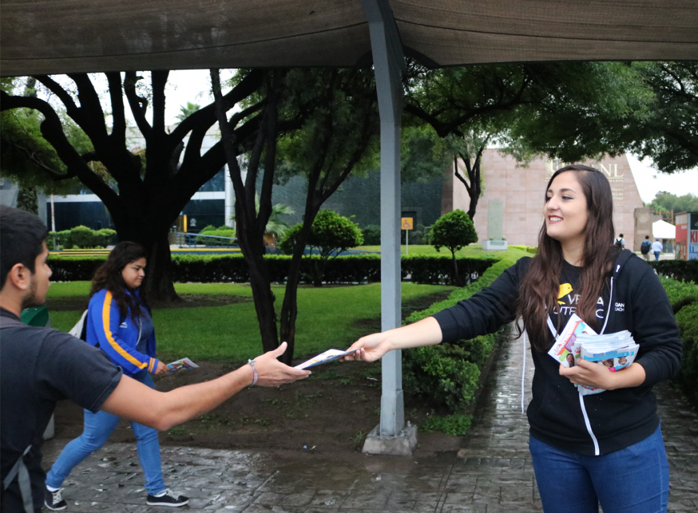
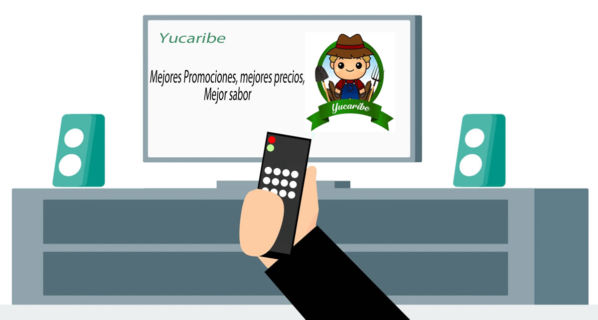

Ayudamos a nuestro cliente Yucaribe a posicionarse en el mercado de forma de hacer el tipo de publicidad
clásica, además de las que nos ofrecen hoy en día las redes sociales, esas son la publicidad callejera:
Pegar carteles informativos de yucaribe. Nuestro equipo va a ir a lugares específicos de la ciudad de
Barranquilla pegando afiches publicitarios de nuestro cliente, para así cuando las personas vean los afiches
sepan de los productos y dirección de yucaribe.
Repetir panfletos en centros comerciales. Los carteles son buenos, pero hay veces en el las personas que
pasan por eselugar no llegan a ver por x o y motivos, por eso es que nuestro equipo va a ir a lugares concurridos para ir
repartiendo
folletos a las diferentes personas que pasen por ahí y además hablando de yucaribe.

Publicidad en televisión
La televisión es un de los sistemas de entretenimiento mas usados del mundo además del internet, con
eso muchas empresas utilizan este medio de entretenimiento para dar a conocer sus productos al
público, y nosotros no vamos a ser la excepción.

Nuestra intencion es aparecer en diversos programas para así captar la atención de sus futuros clientes, con nuestros
anuncios innovadores.